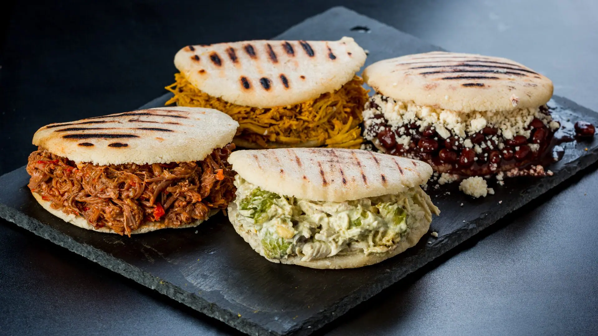

Arepas
Home

Venezuelan Arepas: A Cultural Staple
Venezuelan arepas are round, thick corn patties made from precooked corn flour (Harina PAN), water, and salt. They’re naturally gluten-free and have a crispy exterior with a soft, fluffy interior. Arepas are deeply woven into Venezuelan culture—often referred to as “el pan nuestro de cada día” or “our daily bread”.
What makes them truly special is their versatility: they can be stuffed with endless fillings like shredded beef (carne mechada), black beans and cheese (domino), or the iconic Reina Pepiada (chicken and avocado salad). Whether served for breakfast, lunch, or dinner, arepas are a comforting and flavorful symbol of Venezuelan identity
To make Venezuelan arepas, start by combining precooked corn flour (such as Harina P.A.N.), warm water, and a pinch of salt in a mixing bowl. Stir until the dough comes together, then knead it gently for a few minutes until smooth and pliable. Let the dough rest for about five minutes to hydrate fully. Once ready, shape the dough into round discs about ½ inch thick—these will be your arepas. The texture should be firm but soft, easy to mold without cracking.
Next, heat a lightly oiled skillet or griddle over medium heat and cook the arepas for about 5 to 7 minutes on each side, until they develop a golden crust. For a fluffier interior, you can finish them in a preheated oven at 350°F (175°C) for 10 to 15 minutes. Once cooked, slice them open and fill with your favorite ingredients—classic options include shredded beef, cheese, black beans, or avocado-chicken salad. Arepas are best served warm and make a delicious, customizable meal any time of day.
Ingredients
- -Precooked corn flour (e.g., Harina P.A.N.)
- - Warm water
- - Salt
- -Oil (for cooking)
- -Cheese
- -Shredded Beef or chicken
- -Black beans
- Avocado
Step by Step
- 1.Meassure the Ingredients
- 2.Mix the Dough
- 3.Knead and Rest
- 4.Shape the Arepas
- 5.Coon on Skillet
- 6.Bake for Fluffiness(Optional)
- 7.Slice and Fill